Catalogo disponibile
14 lotti
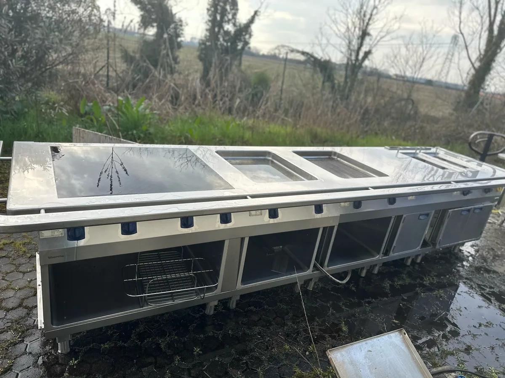
Foto d'archivioSG-001Ristorazione
2 banconi cucina Electrolux
Scheda dettagliata SG-001
Due banconi professionali usati, circa 4,5 m ciascuno secondo l'inventario. Alcuni sportelli mancanti; funzionamento storico riferito, non collaudato di recente.
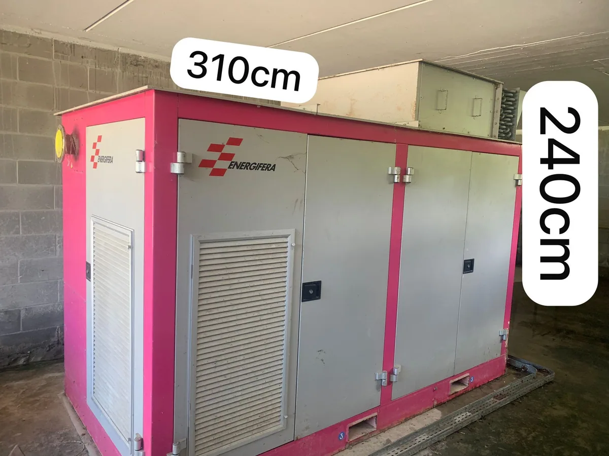
Foto d'archivioSG-002Industriale
Energifera FIX 70 — cogenerazione
Scheda dettagliata SG-002
Sistema di cogenerazione Energifera FIX 70 con centralina di controllo associata, fotografata separatamente su pallet. Configurazione, collegamenti, completezza e operatività da verificare.
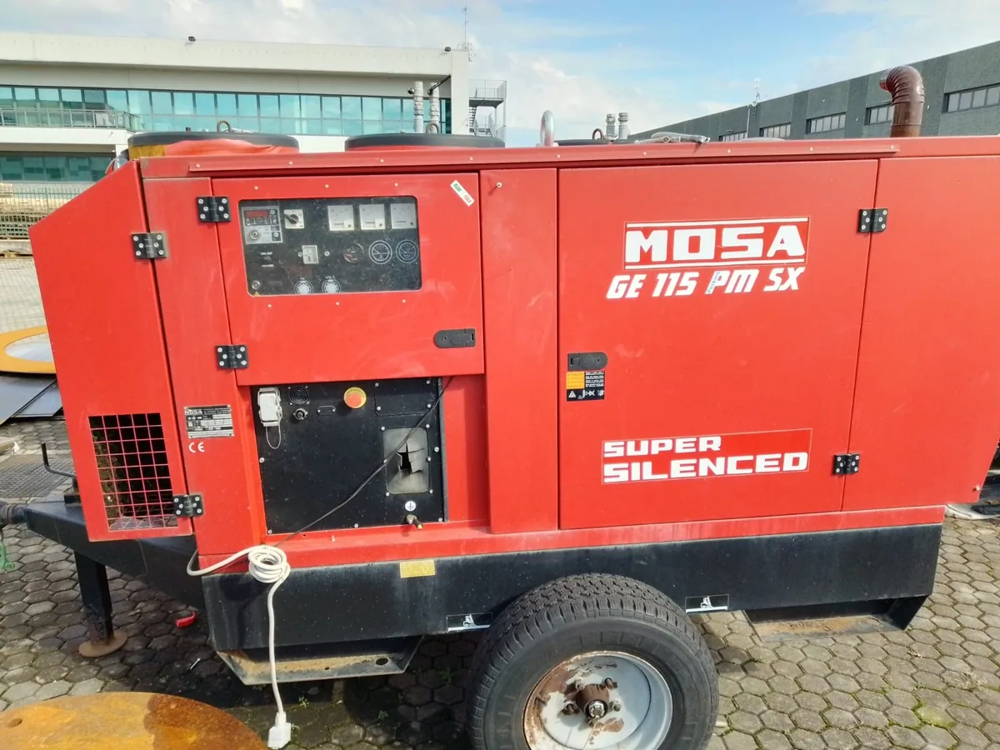
Foto d'archivioSG-004Industriale
Gruppo elettrogeno MOSA
Scheda dettagliata SG-004
Gruppo elettrogeno diesel industriale. Modello preciso e potenza nominale da verificare: documentazione d'archivio discordante.
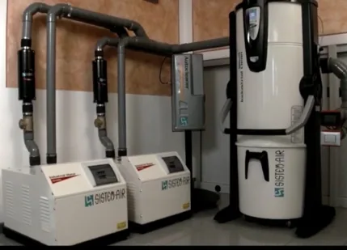
Foto d'archivioSG-005Industriale
Sistem Air — aspirazione industriale
Scheda dettagliata SG-005
Sistema di aspirazione e separazione polveri. Configurazione e marca/modello completo da confermare con targhette e manuali.
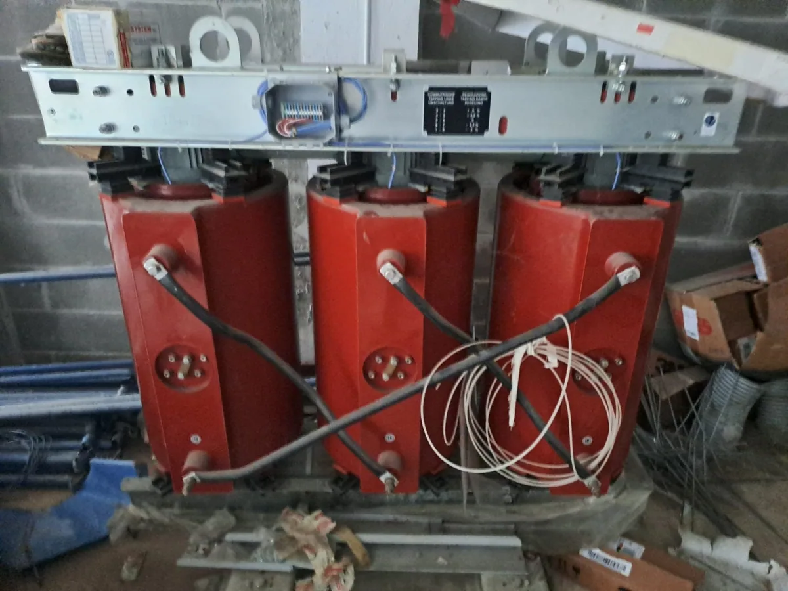
Foto d'archivioSG-006Industriale
Trasformatore SEA TTR-B 500 kVA
Scheda dettagliata SG-006
Trasformatore industriale a secco secondo inventario. Stato, idoneità e dati elettrici da verificare prima dell'impiego.
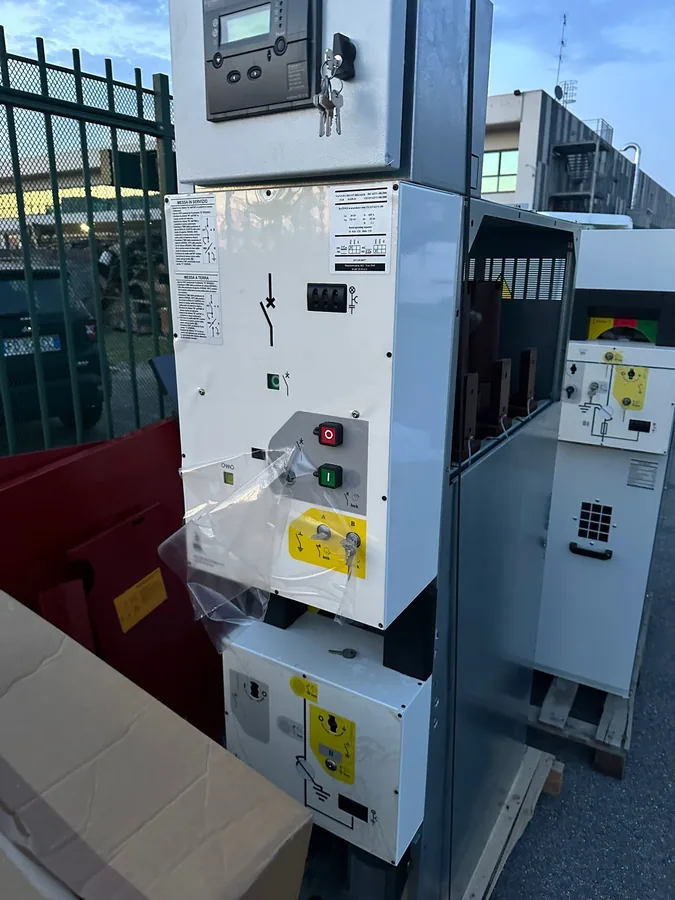
Foto d'archivioSG-007Industriale
Interruttore MT SEL TCB 16.630.24
Scheda dettagliata SG-007
Apparecchiatura di media tensione. Verificare targhetta, documentazione e condizioni operative con tecnico qualificato.
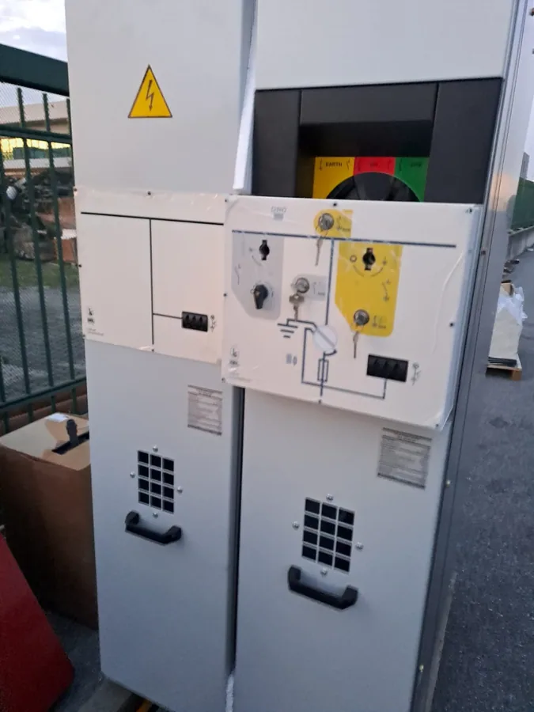
Foto d'archivioSG-008Industriale
Sezionatore MT SEL TPS 16.630.24
Scheda dettagliata SG-008
Apparecchiatura media tensione; possibile valutazione abbinata al lotto SG-007. Verifica tecnica necessaria.
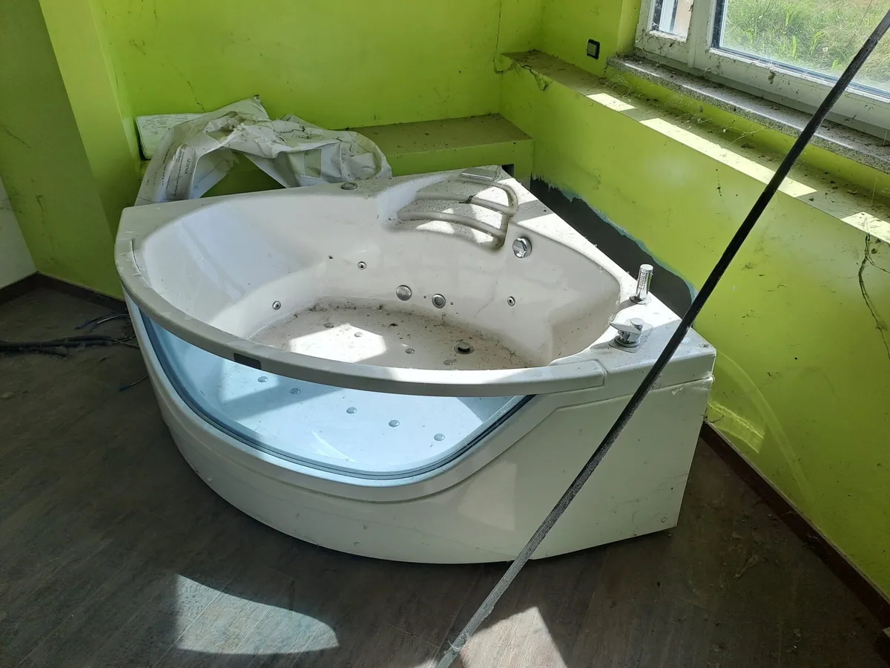
Foto d'archivioSG-009Casa e impianti
Vasca idromassaggio Grandform angolare
Scheda dettagliata SG-009
Vasca angolare da sopralluogo a Cusago. Stato, misure, dotazione e funzionamento da verificare.
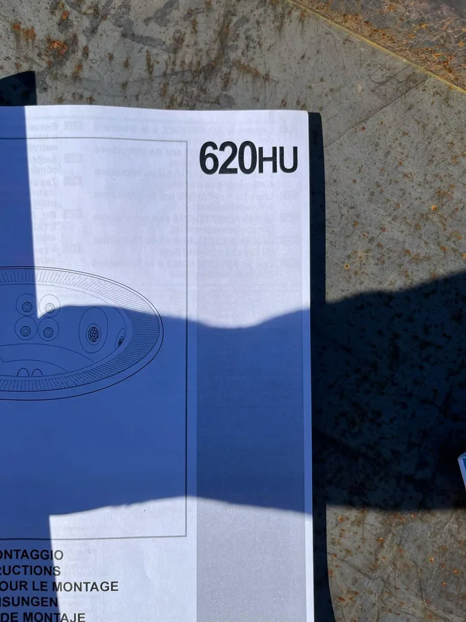
Foto documentazioneSG-010Casa e impianti
Teuco Mirror 620 HU — minipiscina
Scheda dettagliata SG-010
Minipiscina da incasso, modello da documentazione archivio. Foto in evidenza: documentazione tecnica, non foto installata del bene.
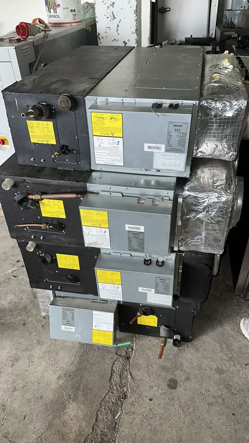
Foto d'archivioSG-011Casa e impianti
Toyotomi TGS-56DTA — unità interna
Scheda dettagliata SG-011
Unità interna di climatizzazione canalizzata. Non presentata come impianto completo; da verificare compatibilità e stato.
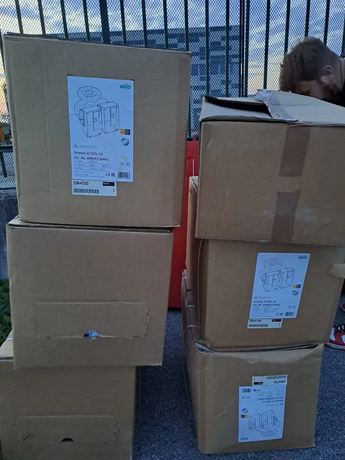
Foto imballaggiSG-012Casa e impianti
Circolatore doppio d'acqua per riscaldamento Wilo Stratos-D 50/1-12
Scheda dettagliata SG-012
Circolatore industriale da inventario. La foto mostra imballaggi; corrispondenza esatta del bene e condizioni da confermare.
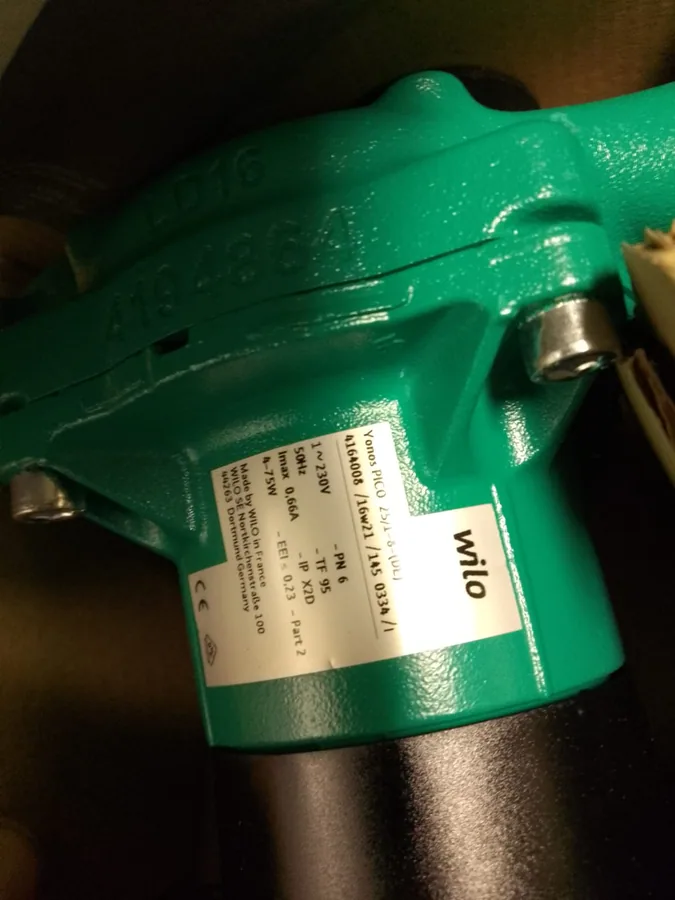
Foto del beneSG-013Casa e impianti
Circolatore d'acqua per riscaldamento Wilo Yonos PICO 25/1-8
Scheda dettagliata SG-013
Circolatore per impianti di riscaldamento. Modello da verificare su targhetta; valutazione e ritiro previo accordo.
Fotografie da caricareFoto del sopralluogo disponibili tramite il referente.
SG-014Ristorazione
Erogatore bibite Celli BRAVE-30
Erogatore refrigerato Celli BRAVE-30 con selettore bibite Pepsi. All'aperto, pannellature danneggiate e cablaggi visibili. Condizioni e funzionamento da verificare; prezzo da concordare.
Scheda dettagliata SG-014
Fotografie da caricareFoto del sopralluogo disponibili tramite il referente.
SG-015Ristorazione
Distributore acqua CEM Danubio Acqua
Distributore inox con tre rubinetti. Targhetta: 220 V, 50 Hz, 500 W, R134a. Segni di deposito, non collaudato; prezzo da concordare.
Scheda dettagliata SG-015
Nessun lotto corrisponde alla ricerca.
Informazioni importanti
Prezzi: valori di richiesta indicativi e trattabili; disponibilità, IVA e condizioni contrattuali da concordare con il soggetto venditore.
Stato: descrizioni e fotografie provengono da archivio precedente. Salvo diversa indicazione, i macchinari non risultano sottoposti a verifica tecnica recente; non sono offerte garanzie di funzionamento, sicurezza o compatibilità.
Sopralluoghi e logistica: su appuntamento a Cusago (MI). L'eventuale smontaggio, ritiro e trasporto vanno concordati caso per caso. Per Energifera, condizioni logistiche specifiche da definire.